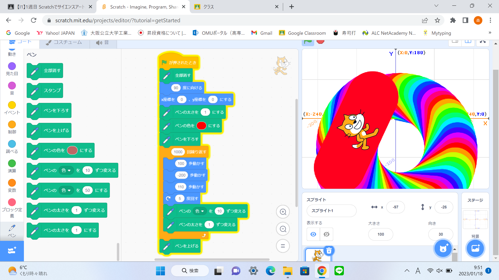
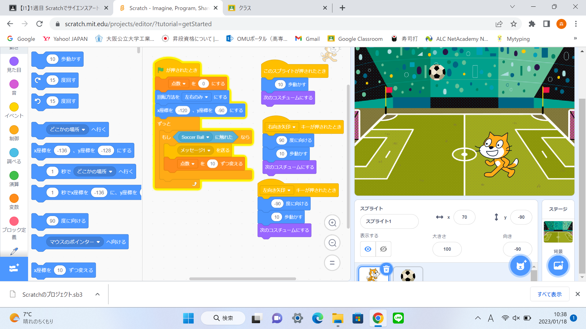

1週目のレポート ： 公大高専１年実習I-1
1B班38番 aiueoz12
第1週目
1-1 サイエンスアート

1.内容
スクラッチを使って線を書くプログラムを作成した。スクラッチでペンのプログラムを使い、猫を移動させていろいろな模様を書いた。
私の作成したプログラムは、猫を行き来させて線の太さと色を変えながら、線を書くプログラムである。
2.感想
色を変えながら、線を書くととても面白いものを制作することができた。自分で線を書くのではなく、プログラム書くと独特なものができるので、とても楽しかった。
線を書くには猫を動かす必要があるので、猫の動きのプログラムを作成するのが難しかった。線の色の種類はとても多く、色には困らないと思った。
1-2 ゲーム

1.内容
落ちてくるボールに触れると、点数が増えるゲームを作成した。私はボールにサッカーボールを使用し、背景もサッカーグラウンドに揃えた。
上からランダムに落ちてくるサッカーボールに触れると、点数が10ずつ増えていくプログラムである。
2.感想
とても簡単なゲームだが、製作するのにいくつものプログラムが必要で、とても大変だった。人気のスマホゲームは、どのようなプログラムでできているのか気になった。
変数はとても便利で、ゲームはたくさんの変数を組み合わせていると思った。
1-3 ホームページ作成
私のホームページ
1.内容
Githubでアカウントを作り、ホームページを作成した。ホームページを編集する能力を身に着けた。
そして、レポート3つをコピーし、その中身を少し編集した。
2.感想
自分がホームページを作るとはあまり想像していなかったので、とても新しい気分だった。しかし、ホームページやレポートを編集するのはとても簡単で、
時間があれば自主的に、取り組んでみたいと思った。レポートのコピーもとても簡単で、コツをつかめばすぐ取り組めたので面白かった。